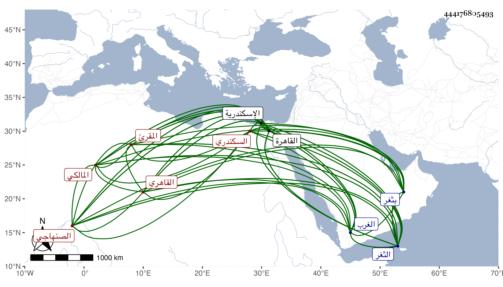

0902Sakhawi.DawLamic.ITO20230111-ara1.EIS1600.444176805493
Biography ID: 444176805493
458
أحمد بن محمد بن عمر بن محمد بن هاشم بن محمد بن عبد الله الشهاب الصنهاجي نسبة لقبيلة بالغرب السكندري المولد والمنشأ القاهري الحسيني الدار المالكي المقرئ والد محمد الآتي ويعرف بابن هاشم . ولد في يوم الجمعة ثالث عشر رجب سنة ثمانين وسبعمائة بثغر الاسكندرية وحفظ بها القرآن وصلى به والعمدة والرسالة لابن أبي زيد وغالب المختصر الفرعي لابن الحاجب وجميع مفتاح الغوامض في أصول الفرائض للصردي وألفية ابن مالك وعرض على قريبه الشريف العلامة الشهاب أحمد بن محمد بن مخلوف الحسيني السكندري المالكي وأجازه بل وبحث عليه في مبادئ ابن الحاجب الفرعي ويقال أنه ممن أخذ عن الفاكهاني وأذن له في الإفتاء والتدريس وكذا أخذ الفقه أيضا عن الشمس محمد بن يوسف الأنصاري المسلاتي المالكي وانتفع به جدا والبدر الدماميني والنحو عن الجمال القرافي النحوي بحسينية القاهرة وتلا بالسبع على الزين عبد الرحمن العسلوني التونسي الفكيري نزيل الثغر والنور علي بن محمد اللخمي السكندري المرخم ثم ارتحل سنة ست وتسعين إلى القاهرة للحج فقرأ بالسبع أيضا على الفخر البلبيسي إمام الأزهر ربع حزب وحج ثم عاد إلى بلده ثم استوطن القاهرة من سنة تسع وثمانمائة مع دخوله بلده في كل سنة ولقي ابن الجزري بالقاهرة سنة تسع وعشرين فقرأ عليه الفاتحة والي المفلحون بالسبع من طريقي الشاطبية والتيسير والتمس منه نظرا الإجازة فأجابه نظما أيضا وطلب الحديث من كبرة من سنة سبع وعشرين فما بعدها فسمع على الكمال بن خير وأبي الطيب محمد بن أحمد بن علوان التونسي الشهير بابن المصري والواسطي والزركشي والطبقة ولازم شيخنا وكان عظيم الاغتباط به وقبل ذلك على ابن خمسين ، وبرع في القراآت وتصدى لها فانتفع به جماعة وممن أخذ عنه الشهاب بن أسد والشهاب المنيحي ، وكتب عنه ولده البقاعي وولي مشيخة البساصية بالثغر وأم بجامع كمال من الحسينية . وكان خيرا وقورا عليه سكينة وعنده فضل جيد وتنقيب كثير لحقائق ما يرد عليه من المسائل وسلامة فطرة جدا ودين متين مقرئا حسن التأدية بالقرآن اعتنى بالنظم فنظم متوسطا . مات في ليلة سابع عشري ذي القعدة سنة خمس وخمسين بالاسكندرية رحمه الله وإيانا .
